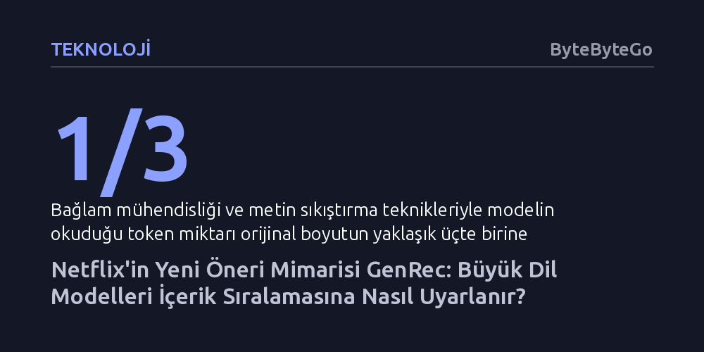

TEKNOLOJI · ByteByteGo · 2026-10-08
Netflix, binlerce karmaşık veri sinyali yerine kullanıcı geçmişini metne dönüştürerek büyük dil modellerini doğrudan içerik sıralamasında kullanan GenRec mimarisini geliştirdi. Sistem, metin üretimi yapmadan tek geçişte katalog puanlaması yaparak devasa model maliyetini ve gecikmeyi önlüyor.
Büyük dil modellerinin yalnızca metin üretmekle kalmayıp, token maliyeti yaratmayan tek geçişli mimarilerle devasa ölçekli tavsiye sistemlerinin omurgası haline gelebileceğini gösteriyor.

Netflix ana sayfası, izleyicinin platformda kalmasını sağlayan en kritik bileşendir. Bir kullanıcının dikkat süresi oldukça sınırlıdır; karşısına çıkan ilk birkaç öneride ilgisini çekecek bir yapım bulamazsa platformdan ayrılma olasılığı hızla artar. Yıllardır bu akışı yöneten geleneksel öneri motorları, binlerce elle kurgulanmış veri özelliğine dayanıyordu. İzleme süreleri, tür sıklıkları ve yarım bırakılan bölümler gibi sayısız parametreyi ayrı ayrı hesaplamak gerekiyordu. Ancak sisteme yeni içerik türleri veya farklı arayüzler eklendikçe, bu özellikleri tek tek tasarlayıp sürdürmek devasa bir mühendislik yüküne dönüştü.
Netflix mühendisleri, bu karmaşayı aşmak adına geniş dünya bilgisine ve kavramsal bağ kurma yeteneğine sahip büyük dil modellerine yöneldi. Bir dil modeli, farklı kategorilerde yer alan iki yapımın ortak temalar barındırdığını metin açıklamalarından rahatlıkla kavrayabilir. Ne var ki genel amaçlı bir modeli doğrudan öneri motoru olarak çalıştırmak mümkün değildir; bu modeller genellikle yalnızca küresel olarak popüler yapımları öne çıkarır, kişiselleştirmede zayıf kalır ve katalogda bulunmayan içerikleri önerebilir. Çözüm, dil modelinin anlamsal kavrayışını Netflix kataloğuna bağlayan GenRec oldu.
GenRec, öneri görevini üstlenmeden önce iki ayrı eğitim aşamasından geçer. İlk aşamada açık kaynaklı bir temel dil modeli, Netflix'in tescilli katalog ve kullanıcı verileriyle eğitilerek platforma özgü bir zemin modeline dönüştürülür. Bu kararlı model yapıyı tanır ve seyrek aralıklarla güncellenir. İkinci aşama olan sonradan eğitimde (post-training) ise model, yeni eklenen yapımlar ve değişen tüketici eğilimleri doğrultusunda sık aralıklarla ince ayara tabi tutulur.
Bu eğitimin temel malzemesini kullanıcı hareketlerinin metinleştirilmesi (verbalization) oluşturur. İzleyicinin geçmişi, izleme saati, beğeni geri bildirimleri ve cihaz türü bir 'kullanıcı mesajı' biçiminde düzenlenir; kullanıcının bir sonraki adımda neyi izlediği ve ne kadar süre kaldığı ise 'asistan mesajı' olarak modele sunulur. Böylece model, geçmiş eylemlerle gelecekteki tercihler arasındaki ilişkiyi doğal bir diyalog kurgusu içinde öğrenir.
Ancak bir kullanıcının tüm geçmişini metne dökmek devasa bir bağlam penceresi ve yüksek işlem maliyeti demektir. Netflix burada seçici bağlam mühendisliği uygulayarak zayıf sinyalleri (örneğin kazara açılıp hemen kapatılan yapımları) ayıkladı ve art arda izlenen bölümleri tek bir özet halinde sıkıştırdı. Bu metin temizleme ve sıkıştırma yöntemleri sayesinde girdi token miktarı orijinal boyutun üçte birine kadar düşürüldü.
Standart bir büyük dil modeli kelimeleri art arda tek tek üreterek çalışır; ancak bu yöntem, milyonlarca kullanıcıya anlık öneri sunulması gereken bir ortamda hem çok yavaştır hem de fahiş sunucu maliyeti doğurur. GenRec bu darboğazı aşmak için yalnızca öndolum (prefill-only) aşamasını kullanır. Model, kullanıcı bağlamını içeren istemi tek bir ileri geçişte okur ve yeni kelimeler üretmek yerine bağlamın sayısal bir özetini (pooled hidden state) çıkarır.
Elde edilen bu sayısal bağlam, modelin ucuna eklenen özel bir sıralama başlığına (scoring head) iletilir. Sıralama başlığı, kullanıcının durumunu katalogdaki yapımların önceden öğrenilmiş sayısal vektörleriyle eşleştirerek her bir filme veya diziye bir uygunluk puanı atar. Bu puanlar softmax fonksiyonu ile olasılık dağılımına dönüştürülüp nihai sıralama belirlenir. Sistem yalnızca katalogdaki mevcut içerikleri puanladığı için modelin katalog dışı hayali yapımlar önerme riski de tamamen ortadan kalkar.
GenRec mimarisi hem çevrimdışı doğrulama testlerinde hem de canlı A/B deneylerinde sınandı. Netflix trafiğinin yaklaşık yüzde 10'unu kapsayan dört haftalık canlı test sonucunda, ana sayfa kısa vadeli etkileşiminde yüzde 0,115, uzun vadeli çekirdek izleme metriğinde ise yüzde 0,006 oranında istatistiksel olarak anlamlı artışlar kaydedildi. Yüz milyonlarca abonenin bulunduğu devasa bir platform ölçeğinde bu oranlar önemli bir izleme süresi kazanımına işaret eder.
GenRec vakası, modern tavsiye sistemlerinde özellik mühendisliğinden bağlam mühendisliğine doğru yaşanan paradigma değişimini somutlaştırmaktadır. Sistemler artık binlerce elle yazılmış kural yerine, dil modellerinin doğal dil kavrayışını tek geçişli verimli çıkarım yöntemleriyle birleştirerek yeni bir çağa adım atmaktadır.